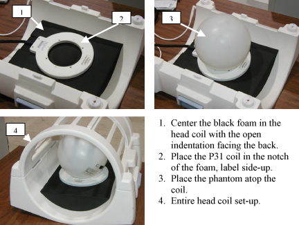

Proprietary to General Electric
Direction 5500113, Rev# 3
Discovery MR450 1.5T Service Methods
Module Version 1.0, Version Date 5/3/07
Proprietary to General Electric |
| Required Persons | Preliminary Reqs | Procedure | Finalization |
|---|---|---|---|
| 1 | Not Applicable | 30 mins | Not Applicable |
The 31P functional test shall be used to verify operation of the transmit and receive RF chains by detection of appropriate signal levels in the Multi Nuclear Spectroscopy (MNS) subsystem.
| Last Update | 01/14/2005 |
| Item | Qty | Effectivity | Part# | Manufacturer | |
|---|---|---|---|---|---|
| MRS sphere phantom | 1 | - | 2152220 | - | |
| Foam phantom positioner | 1 | - | 2389665 | - | |
| G3 Standard Head Coil (not 8-ch coil) | 1 | - | 2376114 | - | |
| 3.0T 31P MNS TR Switch | 1 | - | 2354050 | - | |
Setup coil, phantom and positioner in the standard head coil. (see Illustration 1).
Illustration 1: Coil Set-Up

Plug the head coil into the HEAD port.
Plug the 31P coil into the MNS TRswitch.
In the PATIENT REGISTER screen, select [New Pt].
In PATIENT INFORMATION screen:
Patient ID: geservice<Enter>.
Patient Weight: 300 Lbs <Enter>.
Set Patient Protocols to [Service]
At the scanner, Landmark in the center of the phantom.
In the protocol field, prescribe the series for MNS_31P_Setup and select the LOC+SHIM series.
[Save Series], [Prepare to Scan], [Scan].
DISPLAY THE IMAGE. Verify phantom is in the center of the three localizer images. Adjust position and rescan if necessary. Run AutoPrescan after each repositioning to optimize shim.
Remove Head QD box from the head port (leave the P31 coil connected to the MNS TR Switch).
Click [New Series] and select the [FUNC Test] series in the MNS_31P_Setup service protocol.
[Save Series], [Prepare to Scan], [Spectro Prescan].
In Spectro Prescan:
R1 = maximum.
R2 = maximum.
TG = 0
Upper chart display set to Magnitude.
Lower chart display set to Q-chan raw.
Click [Start].
Verify that the magnitude of the peak in the top display is greater than 1.0x10e8.
If you do not see a distinct peak greater than 1.0 x10e8 when doing the Functional Test, please go to MNS Chain Troubleshooting.
No finalization steps.